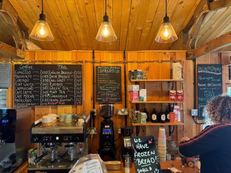

Welcome to Hades Aroma Coffee & Tea House, where we serve the finest blends of coffee and tea in a cozy and inviting atmosphere. Our baristas are passionate about crafting the perfect cup for you, whether you prefer a classic espresso or a refreshing herbal tea.We source our beans and leaves from sustainable farms around the world, ensuring that every sip you take is not only delicious but also ethically produced. Join us for a relaxing experience, and let the aroma of our freshly brewed beverages transport you to a place of comfort and delight.
Visit us today and discover your new favorite drink!
About Us - Aroma Coffee & Tea House
About Us
The company was founded with a passion for quality coffee and tea, and a commitment to providing an exceptional customer experience in the year 2014 by sir Hades Awol Deng. Our team of dedicated professionals works tirelessly to ensure that every visit to our cafe is a memorable one.
The company too made the necessary adjustments for it to be present im the near future and not fail. On top of that, we are constantly innovating and improving our services to better meet the needs of our customers.
We believe that coffee and tea are more than just beverages; they are a way to connect with others, to relax and unwind, and to savor the simple pleasures of life. That's why we strive to create a warm and welcoming environment where our customers can feel at home.

Our Products - Aroma Coffee & Tea House
Our Coffee and Tea Products.
Coffee
Our coffee products are crafted with care and precision, using the finest beans sourced from around the world. This ensures that every cup is rich in flavor and aroma. Hence allowing our customers to enjoy a truly exceptional coffee experience. Examples of our coffee products include: Arabica, Liberica, and Robusta.
Arabica: A high-quality coffee bean known for its smooth, sweet taste and aromatic fragrance.
Robusta: A hardy coffee bean with a stronger, more bitter taste and higher caffeine content.
Liberica: A rare coffee bean with a unique, floral flavor and a distinctive aroma.
Tea
Our tea products are carefully selected and blended to provide a delightful taste experience. We offer a variety of teas, including black, green, white, and herbal options. Each tea is sourced from reputable suppliers to ensure the high quality and freshness.
Black Tea: A fully oxidized tea with a robust flavor and bold aroma.
Green Tea: A lightly oxidized tea known for its fresh, grassy flavor and numerous health benefits.
Herbal Tea: A caffeine-free option made from a variety of herbs, flowers, and fruits, offering a wide range of flavors and health benefits.
Contact Us - Aroma Coffee & Tea House
Contact Aroma Coffee & Tea House.
We would therefore like to invite you to get in touch with us! Whether you have a question about our products, want to provide feedback, or simply want to say hello, please don't hesitate to reach out. We are located at Kilimani along the Uhuru Highway next to the Central Market.